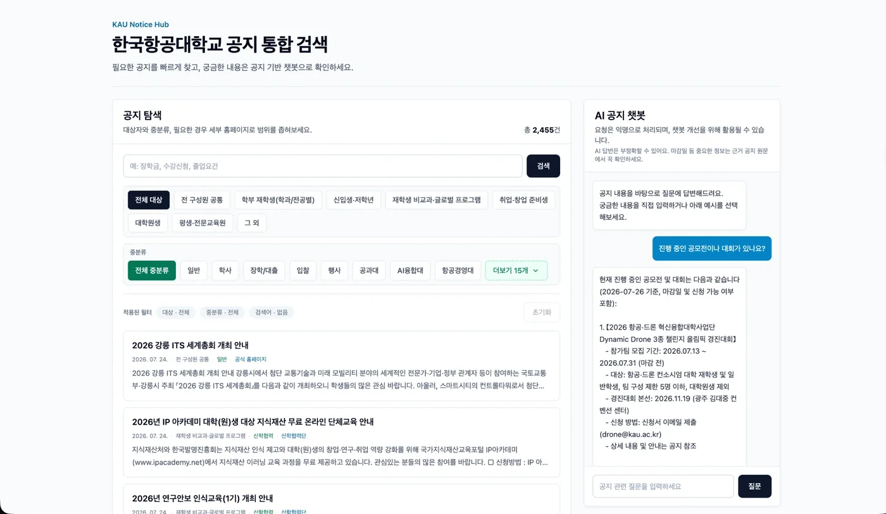
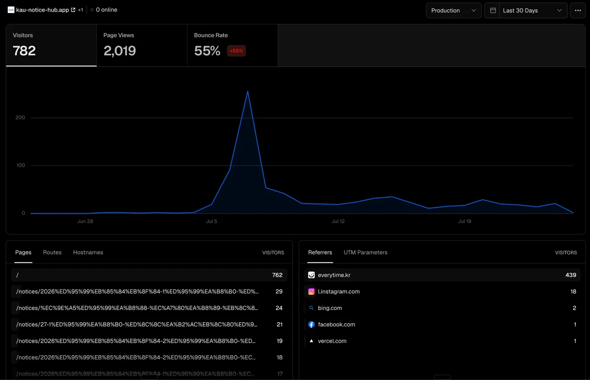

KAU Notice Hub
약 70개 사이트에 흩어진 교내 공지를 한곳에 모았습니다. 수집부터 검색, 질의응답까지 혼자 만들었고 지금 교내 구성원이 쓰고 있습니다.
문제한국항공대의 공지는 학과·부서별로 약 70개 웹사이트에 흩어져 있고, 매년 2,000건 넘게 올라옵니다. 장학금·행사 공지를 놓치는 일이 잦아, 전부 모아서 한곳에서 찾을 수 있게 만들었습니다.
구현Python 크롤러가 70개 사이트를 수집해 FastAPI·SQLite에 적재하고, Next.js에서 출처·카테고리로 탐색합니다. 질문하면 관련 공지를 근거로 답하는 RAG 챗봇을 붙였고, AWS Lightsail에 Docker로 배포해 운영하고 있습니다.

- 70개 교내 사이트Python crawler
- FastAPI · SQLiteingest · search API
- Next.jsbrowse UI
- RAG 챗봇keyword select → rerank
- RAGASanswer eval
설계 결정과 운영만들고 끝이 아니라, 운영하며 생긴 문제를 계측으로 확인하고 고쳤습니다.
- 키워드 기반 RAG의 한계를 확인하고 LLM 키워드 선택 → 문서 필터링 → reranking 구조로 재설계했습니다. 글: RAG 고찰
- "좋아진 것 같다"로 끝내지 않기 위해 RAGAS 평가 파이프라인을 만들어 근거 충실성·관련성·정확성을 수치로 봅니다. 글: RAG 평가 도입
- 공지 데이터를 메모리에 전부 올리던 초기 구조에서 OOM이 발생했습니다. dmesg로 원인을 확인하고 SQLite 기반으로 바꾼 뒤 부하 테스트로 검증했습니다. 글: 인프라 점검
- 공개 서비스의 비용·어뷰징 리스크에 대비해 rate limit·요청 크기·출력 토큰 상한을 걸고, Vercel Analytics로 사용 흐름을 보며 개선 방향을 정합니다. 글: 운영 리스크 글: 모니터링
현재교내 구성원이 활발히 사용하고 있습니다. 출시 첫 달 방문자가 1,000명을 넘었습니다(Vercel Analytics). 유입 대부분이 교내 커뮤니티(에브리타임)를 통해 들어오며, AWS Lightsail 단일 서버에서 운영 중입니다. 위 결정들의 과정은 모두 블로그에 기록해 두었습니다.

- 첫 달 방문자
- 1,000+
- 수집 사이트
- 70
- 수집 공지
- 2,400+
- 담당
- End-to-End